Control Layout Guidelines
This section describes the layout and spacing of controls in dialog boxes. In particular, this section discusses push buttons, bevel buttons, radio buttons, checkboxes, pop-up menu buttons, group boxes, edit text fields, progress indicators, disclosure triangles, static text fields, list boxes and Help buttons.The Western reader's eye tends to move from the upper-left corner of the dialog box to the lower right. Put the initial impression that you want to convey in the upper-left area (such as the alert icon), and place the buttons that a user clicks in the lower right. Following this guideline makes it easier for users to identify what's important in a dialog box.
Push Button Layout
In dialog boxes, you should place push buttons in locations that are functional and consistent--consistent both within your particular application and across other applications that you develop. Note that standard alert boxes will place any buttons automatically.The default button is not necessarily the button in the lower-right corner; it should be the one for the action that the user is most likely to want to perform. If this choice was "Cancel", for example, the default button would be on the left side of the dialog box. See "Default Buttons" (page 20), for more information on assigning the default button.
The standard height of a push button is 20 pixels. Don't count the default ring when measuring the size or alignment of push buttons. The default ring (which is outset 3 pixels from the button) is an attribute and does not affect the base resource size.
- Note
- The resource rectangle of a push button is the same size as its visual dimensions.
To determine the width of a push button that is not a standard one such as the OK button or the Cancel button, add a minimum of 8 pixels between the ends of the text string and the outside line of the button on each side, not including the black border. Figure 3-16 shows a button with the correct spacing at each end of the text.
Figure 3-16 Spacing of text in a push button
The standard size for the OK and Cancel buttons is 20 pixels by 58 pixels. Figure 3-17 shows the OK button.
Figure 3-17 OK button showing standard push button size
In general, it's best to make a set of push buttons all the same size, as determined by the width of the longest button name. When you stack push buttons vertically, center the text, as shown in Figure 3-18.
When you stack push buttons vertically, leave 10 pixels between each button. Figure 3-18 shows this spacing. Recall that you don't count the default ring of a push button, which is an attribute that does not affect the resource size.
Figure 3-18 Distance between vertically stacked buttons
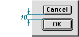
When you place push buttons horizontally, leave 12 pixels between the buttons. Figure 3-19 shows this spacing.
Figure 3-19 Distance between horizontally placed buttons
You should also leave 12 pixels between the edge of a push button and any applicable edge of a dialog box.
For more information on the use of push buttons, see "Push Buttons" (page 19).
Bevel Button Layout
When placing bevel buttons in dialog boxes, leave a minimum of 12 pixels of space horizontally between the buttons. Leave 6 pixels of space from the bottom of the button to the top of the button title. An exception to this rule is the tool palette; for more information, see "Utility Windows" (page 98).A button title can exceed the width of its button. When it does, there should be at least 12 pixels of space between that title and adjacent titles. Be sure to space equally all buttons in the same horizontal group. Figure 3-20 shows the correct spacing between bevel buttons.
Figure 3-20 Spacing of bevel buttons
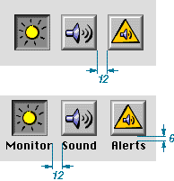
For more information on the use of bevel buttons, see "Bevel Buttons" (page 25).
Checkboxes and Radio Button Layout
The size and layout of checkboxes and radio buttons are identical. The square or circle itself is 12 pixels high and 12 pixels wide. For both radio button and checkbox controls, the Mac OS Toolbox automatically provides for the correct positioning of each control in relation to its text label. Built into the control are 5 pixels of space between the visible square or circle and the text label of the control, assuming a capital M. The bottom of the square is 2 pixels below the baseline of standard 12-point Chicago text. These dimensions are fixed attributes of the control; you do not have to define them nor can you change them. Figure 3-21 illustrates these dimensions.Figure 3-21 Fixed dimensions of a checkbox
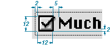
The standard height of an entire checkbox or radio button control (the clickable region) is 18 pixels. Figure 3-22 shows the height of checkboxes.
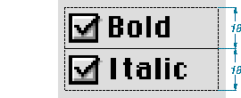
The minimum visible vertical spacing between checkboxes or radio buttons should be 6 pixels. This spacing occurs when you abut 18-pixel high controls, as shown in Figure 3-22.
When you place radio buttons or checkboxes horizontally, leave a minimum of 12 pixels space between them. If possible, leave more than 12 pixels of space between these controls. Leave 5 pixels of space between any preceding text and the first button. Figure 3-23 shows the minimum horizontal spacing between radio buttons.
Figure 3-23 Horizontal spacing of radio buttons
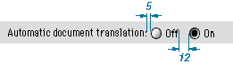
When you use an icon or picture in place of (or along with) a text title for a checkbox or a radio button, the amount of space you allow depends on the position of the icon or picture in relation to the button or checkbox:
Figure 3-24 shows the correct placement of title icons with radio buttons or checkboxes.
- Allow 4 pixels of space between the title and the control when the icon or picture is above the radio button or checkbox.
- Allow 5 pixels of space between the title and the control when the icon or picture is to the right or left of the radio button or checkbox.
Figure 3-24 Spacing of icons used with radio buttons or checkboxes
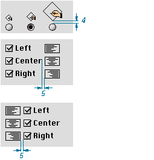
For more information on using these controls, see "Radio Buttons" (page 21) and "Checkboxes" (page 24).
Pop-up Menu Button Layout
The standard height of a pop-up menu button is 20 pixels. If you use the small system font, the height is 18 pixels.When placing pop-up menu buttons in a vertical orientation, leave a minimum distance of 6 pixels between the controls, as shown in Figure 3-25.
Figure 3-25 Vertical spacing of pop-up menus
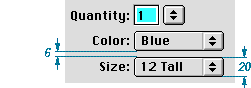
Place paired controls close together. Leave 4 pixels of space between an edit text field and its associated pop-up menu button, or between interrelated pop-up menus. This space between controls is not automatically provided for by the Mac OS Toolbox; it is your responsibility to allow for it in your layout design.
Figure 3-26 shows the horizontal spacing between interrelated pop-up menus and between an edit text field and its pop-up button.
- Note
- Although you can use two or more interrelated pop-up menus, you should avoid doing so because of international sentence structure differences.
Figure 3-26 Horizontal spacing of paired pop-up menus and other controls
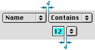
For more information on using pop-up menu buttons, see "Pop-Up Menu Buttons" (page 22).
Group Box Layout
A group box can have a title, but one is not required. When you use a title of any kind with a group box, align the base of the text with the inside white border line of the group box. There should be at least 3 pixels on each side of the title text.Under platinum appearance, group boxes have a 2-pixel border line-- a 1-pixel white line next to a 1-pixel dark gray line. In laying out the group box, your measurements should be from the inside of these lines.
Leave 10 pixels of space between the sides of a group box or the bottom of a group box and any items you place inside those borders. Leave 12 pixels of space from the inside top of the group box to the top of the first item within the group box.
Figure 3-27 shows visual layout measurements for radio button controls in a group box. Notice that the controls align with the checkbox title of the group box.
Figure 3-27 Visual layout measurements of controls in a group box
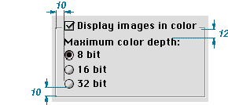
In positioning a secondary group box inside of a primary group box, you should treat the secondary group box as a dialog item with regard to spacing. So for nested group boxes, you measure the space between the outside edge of the secondary group box and the inside border line of the primary group box. Figure 3-28 shows a nested group box that leaves 10 pixels of space between the inside border line of the bottom edge of the primary group box and the outside bottom edge of the nested, secondary group box.
Figure 3-28 Spacing for nested secondary group box
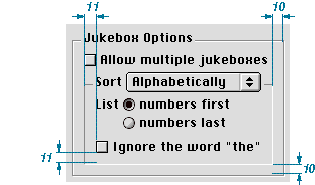
Figure 3-29 summarizes the dimensions for laying out group boxes. The list following the figure describes application of these dimensions.
Figure 3-29 Visual dimensions of a group box
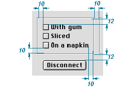
Here is how to use these measurements:
For more information on using group boxes, see "Group Boxes" (page 39).
- Side margins inside, allow 10 pixels.
- Top margin inside, allow 12 pixels.
- Bottom margin inside, allow 10 pixels.
- Horizontal distance between a group box and other groups of controls or group boxes, allow 10 pixels.
- Vertical distance between a group box and other control groups or group boxes, allow 12 pixels.
Edit Text Field Layout
When you measure an edit text field, don't include the bevel outside the black border.The standard height of an edit text field is 22 pixels. If you are aligning the field with a 20-pixel high item, such as a pop-up menu button, you can use a height of 20 pixels, reducing the white space from 2 pixels to 1.
When you stack edit text fields, leave a minimum distance of 6 pixels between the controls. Figure 3-30 shows the spacing and height of edit text fields.
Figure 3-30 Spacing and height of edit text fields
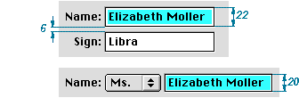
For more information on using edit text fields, see "Edit Text Fields and Frames" (page 35).
Progress Indicator Layout
Progress indicators have a height of 12 pixels and a variable width. When you measure progress indicators, don't include the bevel outside the black line. Figure 3-31 shows measurement for a determinate progress indicator.Figure 3-31 Progress indicator
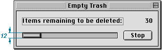
For more information on progress indicators, see "Progress Indicators" (page 42).
Disclosure Triangle Layout
Leave 5 pixels of space between the triangle in its right-pointing, or collapsed, state--ignoring the gray shadow--and its text string, as shown in Figure 3-32.Figure 3-32 Spacing of disclosure triangles
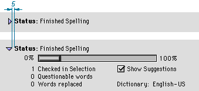
For more information on using disclosure triangles, see "Disclosure Triangles" (page 32).
Static Text Field Layout
To accomodate 12-point Chicago, make static text fields 16 pixels in height. Leave 5 pixels of space between a static text field and the item it defines.There are three approaches you can take to aligning static text fields when you stack multiple dialog box items to which the fields pertain:
- Note
- To determine the proper use of colons in item labels, see Macintosh Human Interface Guidelines.
Figure 3-33 Right-alignment of dialog box item labels
- You can left align the text fields. This is the standard approach.
- You can right align the text fields. This is useful when you use colons at the end of the field. Figure 3-33 shows this approach.
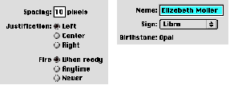
Leave 6 pixels of space between the baseline of text fields and dialog box items that appear below them, as shown in Figure 3-34. This measurement allows space for a keyboard focus ring.
- A third approach--left aligning both the text fields and their items--is useful for the rare case in which the fields are nearly the same length. If you are designing your application and its interface for the international market, you should not take this approach because it does not lend itself to localization.
Figure 3-34 Vertical spacing between static text fields and dialog box items
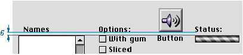
For more information on using static text fields, see "Static Text Fields" (page 36).
List Box Layout
When you measure a list box for layout, don't include the bevel outside the black line.For a list box title, leave 6 pixels of space between the baseline of the text and the black line of a list box. This spacing allows room for the keyboard focus ring. The horizontal spacing varies depending on the list contents. Figure 3-35 shows the spacing for a text title of a list box.
Figure 3-35 Placement of text title for a list box
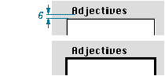
For more information on using list boxes, see "List Boxes and Frames" (page 33).
Help Button Layout
The Help button is a 21-pixel-high, 20-pixel-wide bevel button with the standard help icon. The preferred location is the lower left corner of the dialog box, aligned with the bottom of the push buttons, as shown in Figure 3-36. (Alert boxes do this automatically.)Figure 3-36 Help button in lower left corner
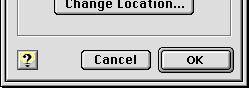
If there are no push buttons or there isn't enough room in the lower left corner, the alternative location is the upper right corner, as seen in Figure 3-37.
Figure 3-37 Help button in upper right corner
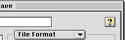